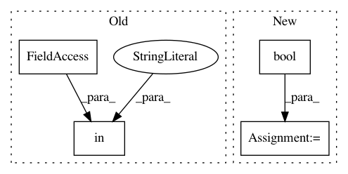

5fce14c0bcc9c0cbf2acf8caeb750f51074242f1,python/baseline/data.py,ExampleDataFeed,__init__,#ExampleDataFeed#Any#Any#,31
Before Change
self.examples = examples
self.batchsz = batchsz
self.shuffle = kwargs["shuffle"] if "shuffle" in kwargs else False
self.vec_alloc = kwargs["alloc_fn"] if "alloc_fn" in kwargs else np.zeros
self.vec_shape = kwargs["shape_fn"] if "shape_fn" in kwargs else np.shape
self.src_vec_trans = kwargs["src_trans_fn"] if "src_trans_fn" in kwargs else None
self.steps = int(math.floor(len(self.examples)/float(batchsz)))
After Change
self.examples = examples
self.batchsz = batchsz
self.shuffle = bool(kwargs.get("shuffle", False))
self.vec_alloc = kwargs.get("vec_alloc", np.zeros)
self.vec_shape = kwargs.get("vec_shape", np.shape)
self.src_vec_trans = kwargs.get("src_vec_trans", None)
self.steps = int(math.floor(len(self.examples)/float(batchsz)))
In pattern: SUPERPATTERN
Frequency: 3
Non-data size: 4
Instances
Project Name: dpressel/mead-baseline
Commit Name: 5fce14c0bcc9c0cbf2acf8caeb750f51074242f1
Time: 2017-07-05
Author: dpressel@gmail.com
File Name: python/baseline/data.py
Class Name: ExampleDataFeed
Method Name: __init__
Project Name: matplotlib/matplotlib
Commit Name: 7c4b0c3c37ec719acb5317712066bd75f7acffb5
Time: 2019-02-09
Author: anntzer.lee@gmail.com
File Name: lib/mpl_toolkits/axes_grid1/inset_locator.py
Class Name: BboxConnector
Method Name: __init__
Project Name: matplotlib/matplotlib
Commit Name: 7c4b0c3c37ec719acb5317712066bd75f7acffb5
Time: 2019-02-09
Author: anntzer.lee@gmail.com
File Name: lib/mpl_toolkits/axes_grid1/inset_locator.py
Class Name:
Method Name: mark_inset